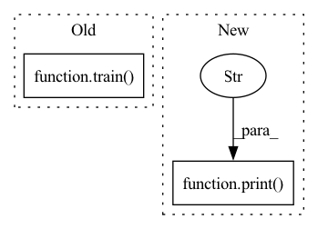

Pattern ID :40622
Before Change
best_acc1 = 0.
for epoch in range(args.epochs):
// train for one epoch
train( train_source_iter, train_target_iter, classifier, domain_adv, optimizer,
lr_sheduler, epoch, args)
// evaluate on validation set
acc1 = validate(val_loader, classifier, args)
After Change
// start training
best_acc1 = 0.
for epoch in range(args.epochs):
print("lr:" , lr_scheduler.get_last_lr()[0])
// train for one epoch
train(train_source_iter, train_target_iter, classifier, domain_adv, optimizer,
lr_scheduler, epoch, args)
In pattern: SUPERPATTERN
Frequency: 6
Non-data size: 2
Instances Fragment ID: 114870696
Project Name: thuml/transfer-learning-library
Commit Name: 261c8da899e1bea09f7552d175ca6b7d9fa6c4c2
Time: 2020-08-15
Author: 13126830206@163.com
File Name: examples-da/unsupervised/cdan.py
M Class Name: AnonimousClass
N Class Name: AnonimousClass
M Method Name: main(1)
N Method Name: main(1)
M Parent Class:
N Parent Class:
M File Name: examples-da/unsupervised/cdan.py
N File Name: examples-da/unsupervised/cdan.py
M Start Line: 50
M End Line: 107
N Start Line: 49
N End Line: 106
Before Change
for epoch in range(start_epoch, args.max_epoch):
print("==> Epoch {}/{}".format(epoch+1, args.max_epoch))
train( model, criterion, optimizer, trainloader, use_gpu)
if args.stepsize > 0: scheduler.step()
if args.eval_step > 0 and (epoch+1) % args.eval_step == 0 or (epoch+1) == args.max_epoch:After Change
start_time = time.time()
best_rank1 = -np.inf
best_epoch = 0
print("==> Start training" )
for epoch in range(start_epoch, args.max_epoch):
train(epoch, model, criterion, optimizer, trainloader, use_gpu)
Fragment ID: 114870691
Project Name: vlsomers/bpbreid
Commit Name: 1702e018e4d09eb2b46edf9aa5c39ef99c11808c
Time: 2018-04-27
Author: k.zhou@qmul.ac.uk
File Name: train_vid_model_xent.py
M Class Name: AnonimousClass
N Class Name: AnonimousClass
M Method Name: main(0)
N Method Name: main(0)
M Parent Class:
N Parent Class:
M File Name: train_vid_model_xent.py
N File Name: train_vid_model_xent.py
M Start Line: 72
M End Line: 161
N Start Line: 72
N End Line: 160
Before Change
for epoch in range(start_epoch, args.max_epoch):
print("==> Epoch {}/{}".format(epoch+1, args.max_epoch))
train( model, criterion_xent, criterion_cent, optimizer_model, optimizer_cent, trainloader, use_gpu)
if args.stepsize > 0: scheduler.step()
if args.eval_step > 0 and (epoch+1) % args.eval_step == 0 or (epoch+1) == args.max_epoch:After Change
start_time = time.time()
best_rank1 = -np.inf
best_epoch = 0
print("==> Start training" )
for epoch in range(start_epoch, args.max_epoch):
train(epoch, model, criterion_xent, criterion_cent, optimizer_model, optimizer_cent, trainloader, use_gpu)
Fragment ID: 114870692
Project Name: vlsomers/bpbreid
Commit Name: 1702e018e4d09eb2b46edf9aa5c39ef99c11808c
Time: 2018-04-27
Author: k.zhou@qmul.ac.uk
File Name: train_img_model_cent.py
M Class Name: AnonimousClass
N Class Name: AnonimousClass
M Method Name: main(0)
N Method Name: main(0)
M Parent Class:
N Parent Class:
M File Name: train_img_model_cent.py
N File Name: train_img_model_cent.py
M Start Line: 79
M End Line: 169
N Start Line: 79
N End Line: 168
Before Change
for epoch in range(start_epoch, args.max_epoch):
print("==> Epoch {}/{}".format(epoch+1, args.max_epoch))
train( model, criterion, optimizer, trainloader, use_gpu)
if args.stepsize > 0: scheduler.step()
if args.eval_step > 0 and (epoch+1) % args.eval_step == 0 or (epoch+1) == args.max_epoch:After Change
start_time = time.time()
best_rank1 = -np.inf
best_epoch = 0
print("==> Start training" )
for epoch in range(start_epoch, args.max_epoch):
train(epoch, model, criterion, optimizer, trainloader, use_gpu)
Fragment ID: 114870693
Project Name: vlsomers/bpbreid
Commit Name: 1702e018e4d09eb2b46edf9aa5c39ef99c11808c
Time: 2018-04-27
Author: k.zhou@qmul.ac.uk
File Name: train_img_model_xent.py
M Class Name: AnonimousClass
N Class Name: AnonimousClass
M Method Name: main(0)
N Method Name: main(0)
M Parent Class:
N Parent Class:
M File Name: train_img_model_xent.py
N File Name: train_img_model_xent.py
M Start Line: 78
M End Line: 164
N Start Line: 78
N End Line: 163
Before Change
for epoch in range(start_epoch, args.max_epoch):
print("==> Epoch {}/{}".format(epoch+1, args.max_epoch))
train( model, criterion_xent, criterion_htri, optimizer, trainloader, use_gpu)
if args.stepsize > 0: scheduler.step()
if args.eval_step > 0 and (epoch+1) % args.eval_step == 0 or (epoch+1) == args.max_epoch:After Change
start_time = time.time()
best_rank1 = -np.inf
best_epoch = 0
print("==> Start training" )
for epoch in range(start_epoch, args.max_epoch):
train(epoch, model, criterion_xent, criterion_htri, optimizer, trainloader, use_gpu)
Fragment ID: 114870694
Project Name: vlsomers/bpbreid
Commit Name: 1702e018e4d09eb2b46edf9aa5c39ef99c11808c
Time: 2018-04-27
Author: k.zhou@qmul.ac.uk
File Name: train_img_model_xent_htri.py
M Class Name: AnonimousClass
N Class Name: AnonimousClass
M Method Name: main(0)
N Method Name: main(0)
M Parent Class:
N Parent Class:
M File Name: train_img_model_xent_htri.py
N File Name: train_img_model_xent_htri.py
M Start Line: 84
M End Line: 173
N Start Line: 84
N End Line: 172
Before Change
local_logger.info(f"Now training epoch {epoch}. LR={optimizer.get_lr():.6f}")
if local_rank == 0:
master_logger.info(f"Now training epoch {epoch}. LR={optimizer.get_lr():.6f}")
train_loss, avg_loss, train_time = train(
dataloader=dataloader_train,
model=model,
criterion=criterion,
optimizer=optimizer,
epoch=epoch,
total_epochs=config.TRAIN.NUM_EPOCHS,
total_batch=total_batch_train,
debug_steps=config.REPORT_FREQ,
accum_iter=config.TRAIN.ACCUM_ITER,
amp=config.AMP,
local_logger=local_logger,
master_logger=master_logger)
scheduler.step()
local_logger.info(f"----- Epoch[{epoch:03d}/{config.TRAIN.NUM_EPOCHS:03d}], " +After Change
// model save
if local_rank == 0:
print("!!!!!!!!!!!!" )
if epoch % config.SAVE_FREQ == 0 or epoch == config.TRAIN.NUM_EPOCHS:
model_path = os.path.join(
config.SAVE, f"{config.MODEL.TYPE}-Epoch-{epoch}-Loss-0")
paddle.save(model.state_dict(), model_path + ".pdparams") Fragment ID: 114870695
Project Name: br-idl/paddlevit
Commit Name: f35d8370eb5924d2eae4019b2b69fc4c20fe01e0
Time: 2021-12-03
Author: 479469418@qq.com
File Name: image_classification/MAE/main_multi_gpu_pretrain.py
M Class Name: AnonimousClass
N Class Name: AnonimousClass
M Method Name: main_worker(0)
N Method Name: main_worker(0)
M Parent Class:
N Parent Class:
M File Name: image_classification/MAE/main_multi_gpu_pretrain.py
N File Name: image_classification/MAE/main_multi_gpu_pretrain.py
M Start Line: 267
M End Line: 432
N Start Line: 390
N End Line: 433